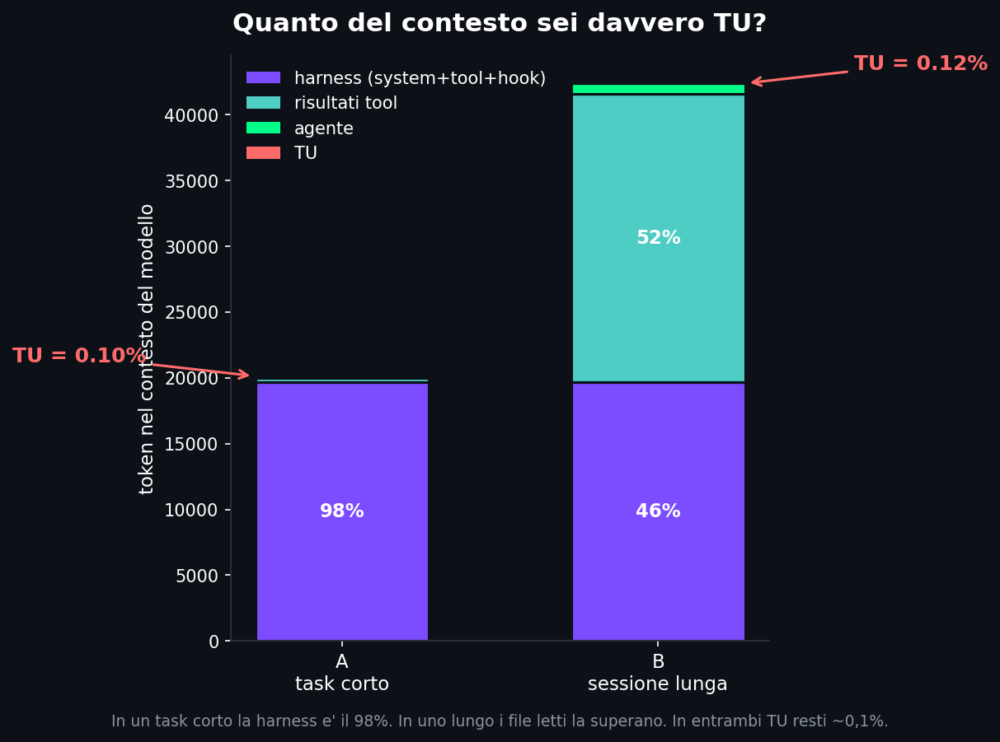

// La Cosa Che Tutti Spiegano, E Quella Che Nessuno Conta
Sezione 00. Il loop e' facile, la dieta nascosta noSe cerchi "come funziona Claude Code" trovi venti articoli che ti disegnano lo stesso schema: l'agente pensa, chiama un tool, legge il risultato, ripensa, e avanti cosi' finche' ha finito. Think, act, observe, repeat. E' giusto, e' anche elegante, ed e' una delle invenzioni piu' vecchie dell'informatica vestita da novita'. Il problema e' che, a furia di raccontare il loop, si e' smesso di guardare la cosa accanto: a ogni giro di quel loop, cosa finisce davvero davanti agli occhi del modello?
Perche' quando tu scrivi sistemami questo bug in una chat con un agente, hai l'impressione che il modello stia leggendo quelle tre parole. Non e' cosi'. Prima delle tue tre parole, la harness, cioe' il programma che avvolge il modello e gli passa il lavoro, gli ha gia' messo in mano una quantita' di roba che tu non vedi: le istruzioni di sistema, le definizioni di tutti i tool, il file di configurazione del progetto, gli hook, le skill. Tutto contesto che paghi e che pesa, scritto da qualcun altro. Mi sono chiesto: rispetto a quella montagna, quanto sono io? Invece di immaginarlo, l'ho misurato.
Non e' l'ennesimo "come funziona il loop". Quello e' scritto ovunque. Qui faccio una cosa che non ho visto fare a nessuno, men che meno in italiano: prendo una sessione tipo, conto ogni singolo token che entra nel contesto e lo attribuisco alla sua sorgente. Chi ha scritto cosa. E alla fine ti dico, numero alla mano, quanto di quel contesto sei davvero tu.
// L'Esperimento, Su Una Cosa Volutamente Stupida
Sezione 01. Un bug finto, per non parlare del mio lavoro veroMi serviva un task che capisse chiunque e che non raccontasse niente di me. Quindi niente sessioni reali: mi sono inventato un toy project. Un carrello della spesa con un bug nello sconto. Il subtotale e' giusto, ma al momento di applicare lo sconto qualcuno, mesi fa, ha scritto un + dove andava un -. Cento euro di spesa, sconto del dieci per cento, e il totale viene centodieci invece di novanta. Il classico bug idiota che costa due minuti a chiunque lo veda.
| 1 | def totale(self): |
| 2 | s = self.subtotale() |
| 3 | # BUG: lo sconto viene sommato invece che sottratto |
| 4 | return s + (s * self.sconto_percentuale()) # dovrebbe essere un meno |
Poi ho ricostruito la sessione tipica che farebbe un agente per sistemarlo. Niente di esotico, il giro che fa sempre: tu scrivi la richiesta, lui legge il file per capire com'e' fatto, lancia i test e li vede fallire, applica la correzione, rilancia i test e li vede passare, ti scrive due righe di riassunto. Cinque o sei mosse. A ogni mossa ho contato i token, e ho diviso il conto in quattro caselle a seconda di chi quei token li ha prodotti:
| Sorgente | Cos'e' |
|---|---|
| HARNESS | Il costo fisso: istruzioni di sistema, definizioni dei tool, file di progetto, hook, skill. Roba che c'e' prima ancora che tu parli. |
| RISULTATI TOOL | Quello che l'agente si procura da solo: il contenuto dei file che legge, l'output dei comandi che lancia. |
| AGENTE | Il suo ragionamento e le chiamate ai tool che scrive. |
| TU | Quello che hai digitato. La richiesta. |
Una nota di onesta', perche' senza diventa marketing. Il costo della harness e' un numero vero, misurato dai dati di fatturazione dell'API: e' identico per tutti, non e' contenuto tuo, e' puro overhead del tooling. Tutto il resto l'ho contato con un tokenizzatore standard. Non e' esattamente quello di Anthropic, quindi i valori assoluti sono una stima entro un dieci-quindici per cento. Ma a noi interessano le proporzioni, e quelle non si spostano.
// Il Risultato: Tu Sei Una Scheggia
Sezione 02. Diciannovemilaseicentonovantaquattro contro ventiEcco la scomposizione del task corto, contesto cumulato fino all'ultima mossa. Guarda le proporzioni prima ancora dei numeri.
In numeri: la harness sono 19.694 token, fissi, quelli che ci sono sempre. I file letti e l'output dei test, trecento. Il ragionamento dell'agente, centotrenta. Tu? Venti token. La tua richiesta, il totale del carrello e' sbagliato quando scatta lo sconto, sistemalo, pesa venti token su un contesto totale di ventimila. Sei lo zero virgola uno per cento di quello che la macchina legge per risponderti.
Per ogni token che scrivi tu, la harness ne mette davanti al modello mille e sette che non hai scritto. Non e' una metafora. E' una divisione.
Il dato e' controintuitivo. In volume, tu sei una riga in un testo che hanno scritto quasi tutto altri: il system prompt, le definizioni dei tool, gli hook. La forma del comportamento dell'agente e' influenzata moltissimo da quei diciannovemila token fissi, anche se la tua richiesta resta il segnale che orienta il lavoro.
Attento a cosa dice davvero questo numero. Non misura l'importanza di un token, misura solo la sua presenza nel contesto. Sono due cose diverse, e qui sta tutta la differenza: pochi token non vuol dire poca influenza. Una sola istruzione tua puo' cambiare da cima a fondo come si comporta l'agente. Quello che dimostro non e' "la tua richiesta conta poco", e' "la tua richiesta occupa pochissimo spazio". Tieni separate le due frasi: il resto dell'articolo regge solo sulla seconda.
// "Eh, Ma Nelle Sessioni Vere?"
Sezione 03. Cambia chi vince, non cambi tuL'obiezione giusta, quella che farei anch'io: certo, su un task da due minuti la harness domina, perche' non e' ancora successo niente. Ma in una sessione vera l'agente apre venti file, lancia i test dieci volte, esplora il codebase. Li' il contesto si gonfia di roba. Vero. L'ho rifatto modellando proprio quello: una sessione lunga in cui l'agente legge ventidue file per orientarsi e gira a lungo.

Il risultato interessante arriva adesso: l'obiezione e' corretta ma non ti salva. Nella sessione lunga succede davvero il ribaltone: i risultati dei tool arrivano al cinquantadue per cento e superano la harness, scesa al quarantasei. La barra si capovolge. Cambia chi comanda il contesto. Ma guarda la fetta rossa: tu passi da venti a cinquantatre token, e in percentuale vai dallo zero virgola dieci allo zero virgola dodici. Ti sei mosso di due centesimi di punto. In pratica sei rimasto fermo.
Ed e' peggio, non meglio. Nel task corto almeno il padrone del contesto e' codice scritto da umani, le istruzioni della harness. Nella sessione lunga il padrone diventa roba che l'agente si e' procurato da solo: file che ha deciso lui di aprire, comandi che ha deciso lui di lanciare. Il contesto si riempie di scelte della macchina. In entrambi i mondi, l'unica certezza e' che chi riempie quella finestra non sei tu. Mai.
// Cosa C'e' Dentro Quei Diciannovemila
Sezione 04. E chi ce li ha messi senza dirteloA questo punto la domanda diventa: cosa sono quei diciannovemila token che ci trovi prima di aprire bocca? Smontiamoli. C'e' il system prompt, il documentone che dice al modello chi e' e come comportarsi. Ci sono le definizioni di tutti i tool, lo schema completo di ogni cosa che puo' fare, leggere file, scrivere, lanciare comandi, cercare sul web, ognuna con i suoi parametri descritti per esteso. C'e' il file di progetto, il classico CLAUDE.md con le tue regole. E poi due categorie che quasi nessuno considera: gli hook e le skill.
Gli hook sono programmini che la harness lancia da sola a momenti precisi, per esempio quando apri la sessione, e il cui output finisce dritto nel contesto del modello. Memoria del progetto, regole imparate in sessioni passate, liste di strumenti aggiuntivi, suggerimenti. Roba utile, spesso. Ma e' roba che entra nella testa dell'agente senza passare da te, e a volte senza che nemmeno tu sappia che c'e'. Le skill sono pacchetti di istruzioni specializzate, e anche le loro descrizioni stanno li' a occupare spazio.
Quel diciannovemila e' il mio, non e' una costante universale. Dipende da come hai vestito la harness. Un'installazione spoglia ne ha molti meno. Una piena di hook, server esterni e skill come la mia ne ha parecchi di piu'. Ed e' questo il lato forense: piu' personalizzi l'agente, piu' allarghi la fetta di contesto scritta da chiunque tranne te, e piu' la tua richiesta occupa una fetta sottile dello spazio. Quando ti chiedi "perche' l'agente si comporta cosi'?", vale la pena cercare la risposta anche in quei diciannovemila token, non solo nei tuoi venti.
C'e' poi la parte che, da queste parti, ci piace. Quella finestra di contesto e' una superficie. Tutto cio' che ci entra, l'agente in qualche misura lo crede. Se un hook ci scrive qualcosa, l'agente lo legge come verita' di contorno. Se l'output di un tool, cioe' il contenuto di un file che l'agente apre, contiene una riga scritta apposta per dargli un ordine, quella riga arriva nel contesto con lo stesso peso del resto. E' esattamente il meccanismo di una prompt injection: funziona perche' trasforma dei dati in istruzioni. Lo stesso vale per gli output dei server MCP, ormai dappertutto: se finiscono nel contesto, per il modello diventano altro testo che deve interpretare nello stesso contesto. Non sto facendo una dimostrazione oggi, ma il terreno e' tutto qui: il contesto non e' tuo, e non e' nemmeno solo dell'agente. E' di chiunque riesca a scriverci dentro. E come hai appena visto, ci scrivono dentro in tanti.
// La Seconda Dimensione: Non Quanto, Ma Quante Volte
Sezione 05. Lo stesso token riletto cinquantacinque volteFin qui ho misurato il volume: quanti token, e di chi. Ma c'e' una seconda dimensione che cambia tutto, e quasi nessuno la racconta. Il contesto e' incrementale. A ogni turno il modello non legge solo l'ultimo messaggio: riceve tutta la conversazione accumulata fino a quel punto, piu' il nuovo output dei tool, piu' il nuovo contesto che la harness aggiunge. A ogni inferenza il contesto completo viene fornito di nuovo al modello, ripresentato come input della chiamata. Gli stessi identici token tornano dentro, daccapo, a ogni singolo giro del loop. E' anche il motivo per cui il costo cresce mano a mano che la sessione va avanti.
| 1 | turno 1 20k # harness + la tua richiesta |
| 2 | turno 2 20k + output del primo tool |
| 3 | turno 3 20k + output tool + file letto |
| 4 | turno 4 20k + output tool + file + nuovo file... |
| 5 | # a ogni giro il contesto completo torna in input |
Questo divide il contesto in due nature molto diverse. C'e' la parte statica, che entra all'inizio e resta immobile per tutta la sessione, e la parte dinamica, che si gonfia a ogni mossa.
- system prompt
- definizioni dei tool
- skill
- hook
- CLAUDE.md
- file letti
- output dei comandi
- test
- i tuoi messaggi
- il ragionamento dell'agente
La parte statica e' piccola come numero di voci, ed e' proprio quella che paga il prezzo della persistenza: c'e' dal primo turno, quindi viene riletta tutte le volte. Quei diciannovemila token vengono riprocessati a ogni chiamata del modello. Da qui una metrica che prendo in prestito dal mondo dello storage e applico al contesto degli agenti: la chiamo read amplification, il rapporto tra tutti i token processati durante la sessione e quelli presenti nel turno piu' grande. Il termine non e' uno standard del mondo LLM, l'estensione agli agenti e' mia. Per produrre i tuoi venti token di risposta, il modello deve rileggere decine di migliaia di token gia' presenti: una modifica minuscola dell'input comporta la rilettura di una quantita' enorme di contesto.
| Sorgente | Quando entra | Quante volte viene riletto |
|---|---|---|
| System prompt, tool, hook, skill | turno 1 | a ogni turno |
| CLAUDE.md | turno 1 | a ogni turno |
| La tua richiesta | turno 1 | a ogni turno successivo |
| Output dei comandi | quando l'agente li lancia | a ogni turno successivo |
| File letti | quando l'agente li apre | a ogni turno successivo |
Sull'esempio da cinque turni l'amplificazione e' gia' cinque volte: ventimila token al picco, ma centomila effettivamente riletti. Su una sessione vera esplode. Ho misurato quella in cui ho costruito questa analisi, lunga e piena di lavoro: novantanove chiamate al modello, centoventunmila token nel turno piu' grande, e sei milioni e seicentomila token riletti in totale. I diciannovemila della harness, riprocessati novantanove volte uno dopo l'altro.
Un'obiezione tecnica, anticipata. Dal punto di vista logico il contesto viene ripresentato a ogni inferenza. Molte implementazioni mantengono una KV cache che, nelle inferenze compatibili, evita di ricalcolare da zero l'attenzione sui token gia' visti, e questo riduce il lavoro interno e il prezzo: lo vedi negli sconti sui token "cached". Ma non cambia la sostanza, quei token continuano a far parte di ogni inferenza. E allungare il contesto non aumenta solo la memoria occupata: aumenta anche il lavoro richiesto ai meccanismi di attenzione, pur con le ottimizzazioni dei modelli moderni, ed e' il motivo per cui i contesti molto lunghi costano sempre di piu'.
I limiti, detti chiaramente. Questa misura non dice quanto ogni sorgente influenzi davvero la risposta finale. Dice quanto spazio occupa e quanto a lungo resta nel contesto. L'influenza effettiva dipende anche dall'architettura del modello, da come l'attenzione pesa i token e dal loro contenuto. Sto misurando l'occupazione e la persistenza, non l'importanza: sono piani diversi, e tengo separata l'osservazione dall'interpretazione apposta.
C'e' anche un motivo per cui la fetta dinamica si gonfia cosi' in fretta, ed e' piu' sottile di "l'agente legge dei file". Per sistemare una riga, un agente non apre solo il file che modifica. Apre le sue dipendenze, i test, il README, la configurazione, gli helper, e si rilegge gli errori del compilatore. Il codice che tocca e' minuscolo, quello che guarda per decidere e' enorme. Per questo la parte tool cresce molto piu' in fretta del lavoro effettivo, e ogni file aperto poi viaggia nel contesto per tutti i turni che restano. E tutto compete per lo stesso spazio: la context window non e' occupata "dalla conversazione", e' un'unica finestra dove system prompt, definizioni dei tool, file letti e output dei comandi si contendono lo stesso budget. Quando si riempie, qualcosa deve cedere.
Fin qui, volume e persistenza. Resta il costo. In una sessione lunga la maggior parte del lavoro computazionale non viene dal generare token nuovi, ma dal rileggere di continuo quelli gia' presenti. E' anche il motivo per cui le risposte rallentano man mano che la conversazione cresce: non stai pagando soprattutto quello che il modello scrive, stai pagando tutto quello che si deve rileggere prima di scriverlo. Contesto, inferenza, costo e latenza sono quattro aspetti strettamente collegati dello stesso fenomeno: la latenza, per onesta', dipende anche da hardware, batching, cache e rete, ma la direzione e' quella.
Un limite onesto di questa misura. Vale finche' la conversazione non viene compressa. Molti agenti, superata una certa soglia di riempimento, sintetizzano in automatico parte della cronologia: riassumono, tagliano, ricostruiscono la memoria. Da quel momento la composizione del contesto cambia e i conti vanno rifatti. La foto che ti ho fatto vale per la sessione prima della compattazione, dopo e' un'altra foto.
Il token piu' costoso non e' quello che occupa piu' spazio. E' quello che viene riletto piu' volte. Non conta solo quanti token hai: conta quante inferenze li attraversano.
// Non Fidarti, Misuralo Sulla Tua Sessione
Sezione 06. Uno script, il tuo transcript, due minutiQuesti numeri vengono da un esempio inventato apposta, neutro, perche' non volevo mostrarti il mio lavoro vero. Ma il bello e' che la stessa misura la puoi fare sulla tua sessione, quella vera, sul tuo disco. Claude Code tiene un registro di ogni sessione in un file di testo, dentro ~/.claude/projects/. Lo script nel repo lo legge e ti sputa fuori esattamente la stessa scomposizione: harness, tool, agente, tu.
E' scritto per essere a prova di paranoia, e giustamente: non stampa mai il contenuto dei tuoi messaggi ne' dei file che hai aperto, conta i token e basta, e gira tutto in locale. Niente esce dal tuo computer. Il totale che usa e' il numero reale dei dati di fatturazione, non una stima, e la voce "harness" e' semplicemente tutto cio' che resta togliendo i messaggi visibili.
| 1 | pip install tiktoken |
| 2 | # senza argomenti prende la sessione piu' recente |
| 3 | python analizza-la-tua-sessione.py |
| 4 | |
| 5 | # oppure puntala a un transcript preciso |
| 6 | python analizza-la-tua-sessione.py ~/.claude/projects/<progetto>/<id>.jsonl |
L'ho lanciato sulla sessione vera in cui ho costruito proprio questa analisi, una sessione lunga e piena di lavoro. Risultato: harness al settantadue per cento, ragionamento dell'agente al venti, file letti all'otto, e io allo zero virgola venticinque per cento. Trecentonovantadue token non miei per ogni token mio. Diverso dall'esempio inventato nei dettagli, identico nella morale. Quando i numeri veri confermano quelli finti, l'esempio finto ha fatto il suo lavoro. E se vuoi rifare anche il conto della persistenza, il numero da cinquantacinque volte, c'e' uno script gemello (read_amplification.py) che la calcola sulla tua sessione, sempre solo dai conteggi.
// Implicazioni Progettuali
Sezione 07. Le stesse due misure, lette come regoleFinora ho fatto l'analista. Ma se costruisci agenti, da questi due numeri, volume e persistenza, scendono delle regole molto concrete. Non sono opinioni, sono conseguenze dell'aritmetica: ogni token lo paghi moltiplicato per i turni che restano. Tienilo a mente e quattro decisioni si raddrizzano da sole.
Taglia gli output dei tool alla fonte. Un comando che vomita mille righe, un file letto per intero quando ti serviva una funzione, una query che torna tutto il database: quel token non lo paghi una volta, lo paghi per ogni turno fino a fine sessione. Un head, un grep mirato, una paginazione, un troncamento, non sono pignoleria: il risparmio si moltiplica per tutte le riletture che eviti. E' la leva di costo piu' sottovalutata che conosca.
Un hook verboso e' la cosa piu' cara che hai. Gli hook stanno nella parte statica: vengono riletti a ogni chiamata. Un hook che inietta duemila token di "stato del progetto" non costa duemila token, ne costa duemila per turno. Su una sessione da novantanove giri sono duecentomila. Il contenuto degli hook va trattato come il system prompt: il piu' corto possibile, solo l'essenziale, mai un dump "tanto puo' servire".
Far leggere cinquanta file "per sicurezza" e' quasi sempre un errore. Il riflesso di dare all'agente tutto il contesto "cosi' e' coperto" si ritorce due volte: ogni file aperto entra nella fetta dinamica e ci resta per tutti i turni successivi, e per giunta diluisce il segnale, perche' il modello deve ritrovare l'ago in un pagliaio che gli hai dato tu. Meglio un retrieval mirato, una lettura quando serve, e chiudere. Il contesto giusto batte il contesto abbondante, sempre.
Sintetizza presto, non quando esplode. Visto che il costo cresce con la rilettura, comprimere il contesto prima che diventi enorme non e' igiene, e' risparmio diretto su costo e latenza di ogni turno a venire. Un riassunto da cinquecento token che rimpiazza ottomila token di cronologia ripaga il costo della compressione in pochissimi giri. Aspettare la soglia automatica e' gia' tardi: a quel punto hai pagato la rilettura piena per decine di turni.
| La scelta | Perche' pesa, col conto in mano | La mossa |
|---|---|---|
| Output dei tool lunghi | Riletti a ogni turno restante | Tronca e filtra alla fonte |
| Hook e system prompt gonfi | Parte statica, riletta sempre | Solo l'essenziale, niente dump |
| Leggere file in massa | Restano nel contesto e diluiscono il segnale | Retrieval mirato, una lettura quando serve |
| Sintesi tardiva | Paghi la rilettura piena fino alla soglia | Comprimi presto, sotto controllo |
Il principio, in una riga. Progettare un agente economico vuol dire tenere piccola la parte statica e corta la parte dinamica, perche' le paghi entrambe moltiplicate per il numero di turni. Tutto il resto sono variazioni di questo principio.
// Script e Codice
Sezione 08. Tutto riproducibile, anche sulla tua sessioneTutto il codice e' su GitHub, nella cartella scripts/sei-lo-zero-virgola-uno/. Gli scenari e il grafico girano con tiktoken e matplotlib; gli script che leggono il tuo transcript vogliono solo tiktoken e non fanno uscire nulla dal tuo computer.
| File | Cosa fa |
|---|---|
scenari.py | I due scenari neutri (task corto e sessione lunga), con la scomposizione del contesto per sorgente contata token per token |
persistenza.py | La "vita di un token": quante volte ogni sorgente viene riprocessata, e la read amplification sull'esempio |
grafico.py | Genera il grafico dei due scenari che vedi nell'articolo |
analizza-la-tua-sessione.py | Sul tuo transcript: la scomposizione del contesto (harness, tool, agente, tu). Solo conteggi, mai il contenuto |
read_amplification.py | Sul tuo transcript: la read amplification reale (turni, picco del contesto, token riletti) dai campi usage dell'API |
cart.py + test_cart.py | Il toy project col bug dello sconto, usato come esempio neutro |
// Chi Scrive Davvero
Sezione 09. Cosa mi tengo da questa divisioneNon e' un articolo contro gli agenti, li uso ogni giorno e mi pagano le bollette. E non e' nemmeno un "occhio che ti spiano". E' una correzione di prospettiva, e basta. Quando lavori con un agente di coding hai la sensazione di essere al centro della scena, il regista che da' gli ordini. La misura ridimensiona la scena: in volume la tua parte e' minima, e il grosso del contesto lo riempiono altri, chi ha scritto il system prompt, chi ha definito i tool, chi ha messo gli hook, e l'agente stesso coi file e i comandi che apre. Resta vero, e l'ho ripetuto apposta, che quella parte minima e' anche il segnale che mette in moto tutto il resto.
E c'e' un secondo livello, quello che mi interessa di piu'. La domanda di partenza era "chi scrive il contesto?". Misurando la persistenza ne spunta una piu' fine: "quali parti di quel contesto il modello continua a rileggere, turno dopo turno, per tutta la sessione?". La risposta e' la stessa fetta statica che hai gia' visto, e ogni rilettura e' un'inferenza pagata. Non basta sapere quanti token hai: conta quante volte ci passi sopra.
Sapere questo cambia anche il modo in cui debugghi. Quando l'agente fa una cosa strana, il riflesso e' rileggere la propria richiesta a caccia dell'errore tuo. Ma quella richiesta e' una frazione minima di cio' che il modello aveva davanti, e intorno c'e' un contesto molto piu' grande e quasi tutto non scritto da te: una regola del file di progetto che avevi dimenticato, un hook che inietta qualcosa, il contenuto di un file che l'agente ha letto e preso per buono. Quando il tuo prompt sembra giusto e il risultato no, e' li' che conviene allargare lo sguardo, non solo sulle tue due righe.
Tutto questo, oggi, ha un nome che gira parecchio: context engineering. Progettare un agente vuol dire progettare soprattutto il contesto che gli verra' mostrato, prima ancora del modello che lo legge. Questo pezzo, in fondo, parla quasi solo di quello: di chi riempie quella finestra, di quanto a lungo ci resta, e di quanto ti costa ogni volta che ci ripassa sopra.
Sembra un articolo su Claude Code, e Claude Code e' stato solo il banco di prova. Il fenomeno non e' suo: e' di qualunque agente che si costruisce il contesto turno dopo turno, da Codex a Gemini CLI, da Aider a Cursor o Windsurf fino a Goose. Cambiano i numeri, cambia la forma della harness, non cambia la legge. In fondo non parla di un prodotto, parla del budget del contesto, e quello ce l'hanno tutti.
Ogni prompt e' una riga
in un documento molto piu' grande, scritto gia' da molti.
Nota. Tutto il codice e' su GitHub, nella cartella scripts/sei-lo-zero-virgola-uno/. Gli scenari e il grafico girano con tiktoken e matplotlib; lo script sul transcript reale serve solo tiktoken. Il costo fisso della harness e' un numero reale preso dai campi usage dell'API (system prompt, definizioni dei tool, file di progetto, hook, skill); nel mio setup sono 19.694 token, ma dipende da come hai configurato l'agente. Tutto il resto e' contato con il tokenizzatore cl100k_base, che e' di OpenAI e non di Anthropic: i valori assoluti sono stime entro circa il dieci-quindici per cento, le proporzioni reggono. I numeri di read amplification (cinque volte sull'esempio, cinquantacinque sulla sessione reale da 99 turni) sono la somma dei token in input a ogni chiamata divisa per il contesto piu' pieno, sempre dai campi usage, e valgono per la sessione prima dell'eventuale compattazione automatica. L'esempio del carrello e' inventato apposta per non mostrare lavoro reale; la verifica sulla sessione vera serve solo a confermare che le proporzioni dell'esempio non barano. Un'ultima precisazione: i numeri assoluti dipendono dall'implementazione dell'agente, qui Claude Code. L'analisi descrive un principio generale, valido per qualunque agente che accumuli contesto a ogni turno; le percentuali e i conteggi riportati si riferiscono alla configurazione misurata, e con un altro agente o un altro setup cambierebbero nei valori, non nella sostanza.